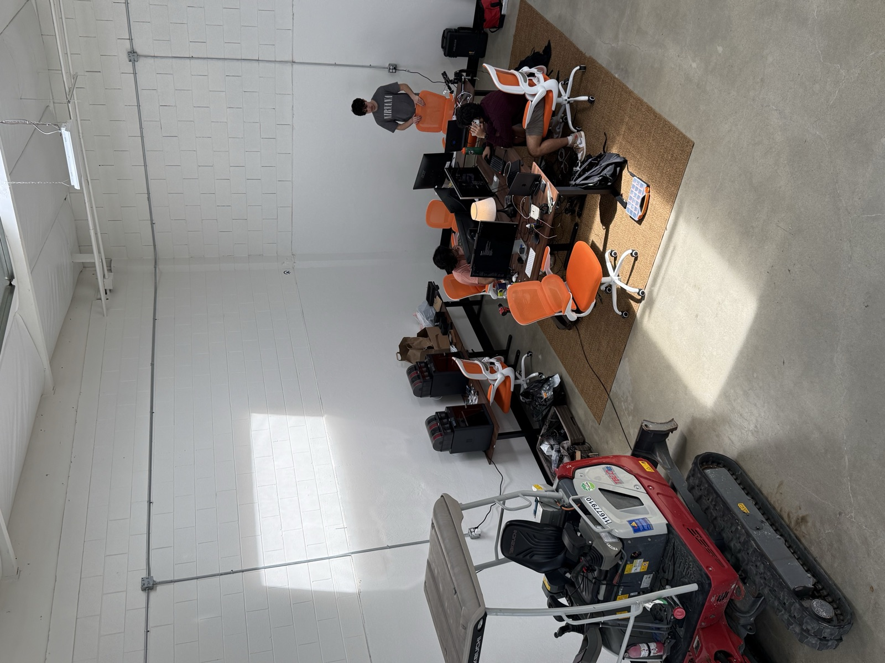

My Company
To the few (or many?) that read my thoughts here, you might wonder what exactly am I doing with my time. Given that I've written a decent amount about morality and purpose, I should probably have some fair idea of how it contextually transposes to myself. Though, the irony here is that I write about those things because I don't have a firm idea, only discoveries. So what do I do with my time?
To start, I'm not in school right now. I actually left Vanderbilt and don't necessarily have any ambition to return. I've left school because I need more leverage to pursue the ideas that I have. People call this starting a company, but I think it's purely a mechanism for putting a group of extremely motivated people together and collectively achieving ambitions. I began this pursuit about 9 months ago, and it's genuinely been one of the most difficult things I've done in my twenty years of living. At the highest level, my goal is to reform how we inherently interact with machinery. If you examine the progression of machinery over time, each iteration is sort of parts of another iteration. This is obvious; a tractor is a couple thousand years of discoveries. Though over the last hundred years or so, it's evident that not much has iterated largely. Tolerances, precision, and scale have mainly been indexed, while how we physically manipulate the world has remained relatively the same. I hold the argument that we've plateaued here and the next step isn't actually physical. It's rather a manifestation of how can we now configure machinery we've already created to no longer be bottlenecked by its next largest nuance: us, the operators.
I wouldn't say this argument is entirely novel, in fact there are a few companies pursuing approaches right now. However, if you dig deeper into machine autonomy, you'll quickly identify that prior and current approaches generalize to "how do we make X machine autonomous?" i.e. retrofitting a preexisting machine to do some respective autonomous task. This is actually where we started. We took a full-sized tractor, built a perception kit, and installed actuators to control the mechanisms on the machine. This to my surprise was fairly easy (given a month or so of living in a shop developing the kit). The reality hits when you begin to deploy an engineered solution like this into the real world. The sheer number of edge cases we encountered surpassed anything we initially expected in such an unstructured environment. So what are others doing? Here are a few worth mentioning:
Carbon Robotics
Takes John Deere 6R tractors and retrofits a sensor stack on top, allowing the machine to do preplanned (scripted) autonomous field pathing. From what I hear, they are having difficulty selling these kits and haven't even shipped them officially yet. This is likely because of the limited scope of task (and even machinery) they are working with. Their laser weeder is very cool however (and extremely expensive).

Bedrock Robotics
This is a newer automation company derived mostly by the mindset of taking Waymo's tech and translating it to excavation. Recently, through King-making, they've become incredibly funded and popular. But what have they shipped? So far we've seen granular autonomous digging and promises of operator-less trajectories by 2026. Ironically, most of their demos are just b-roll of operator footage, but I won't discount them too heavily here - Boris is a cool guy. Though, a thought that comes to mind is if this is just the Cruise for earth moving?

Polymath Robotics
I don't understand what this company does? Have seen some cool demos, but don't know much about their business model.

Update: Spoke with Polymath in person at CONEXPO 2026, and was surprised to know that they explicitly do not believe in an ML approach to this problem. Ironically, I was told that only legacy robotics approaches work because ML is non-determinstic. I cast no shade here, but perhaps this is the reason they have a total of 10 deployments [per their sales rep]?
Sabanto
These guys are cool strictly because they actually shipped a robot. They have some in Kansas too, and I've spent quite a bit of time with them. It can't do much other than mow sod by following a GPS path and avoiding cows however.

John Deere, Caterpillar, and the OEMs
This is the whale in the room. Inherently, all of the companies above are complementary and reliant to these guys. So where are the manufacturers headed? The reality and answer is that these companies are massive vessels that move at one slow speed. They contribute to the plateau. John Deere autonomy is incredibly narrow: their only capability to date (after a decade of development) is automating tillage and traversing an orchard. This is maybe 1% of what farming realistically looks like. Caterpillar has the same approach, automating dump truck dump and return. Between the both of these, they setup pre-planned scripts that enable the vehicle to follow a path and avoid obstacles. This is definitively an engineered solution that has enumerable bottlenecks (unending edge cases, generalizability issues, inability to run purely locally, and so on).
A running theme to notice across all of these attempts is how per-embodiment they are; meaning one takes some piece of machinery and designs an interface that works specifically for that machine. The interface part will always be doable, but what about controlling that interface? The answer is the entire position I am taking with this company. I believe that ultimately we need to examine all embodiments of machines and the environments they work in to find the true answer to generally autonomous machinery (not that it's some singularity).
The foremost problem that we face is the lack of data across different embodiments. Ultimately there needs to be some recursive loop (commonly called "a flywheel") for collecting an immense amount of data that doesn't require spending millions on collection. About three months ago, we realized there's a subtle mechanism for doing this in the industry; don't sell autonomy but sell the sensor stack itself first. A proof point we've identified is that industry companies like to see what's happening with their machines and operators. We install a collection stack on their machine and in return they receive value from the data it collects. This simple model is allowing us to collect data from about 100 signed deployed in just this last month. Our goal is to orient all data we capture towards high value, repeatable, trajectories that operators make. Look at how many repeated trajectories are being done alone in this mid-sized solar field construction:
Our baseline for generalization is firstly through models that exist already. What we do is take the data we collect (which is specifically attuned for these models) and post-train them. Out of the box this does not work immediately. For example, many of these models do not come with a built-in depth encoder or the ability to interpret joystick positions instead of encoder positions (think about how a joystick position can relate to infinitely many end-effector positions). Nonetheless, we are adding these features in-house with our small team. The big picture here is that there exist these lab-based models (π, OpenVLA, lingbotVLA, etc) that are in essence stuck to general tasks like putting dishes away, laundry folding, and other monotonous household tasks. What we look to do is be the first premier interface for model companies to deploy into the real world. An extreme economic outcome for us is when we reach an inflection point where commercialization between the model companies and industry companies is recursively useful. Meaning, when we improve the models, we expand the scope of high value automations that we can sell back to the industry, while being a great expander of model capability for the labs. A commonly asked question is why won't the OEMs do this? I find the answer implicit: if their start is what they are doing now, then they are already headed in the wrong direction. Then again, my naive take on any question like this is that a small team like ours will always move faster and iterate on problems quicker.
An interesting index worth mentioning here as well is the difference between the number of operators and available machinery. The number of machines out there is significantly larger than the pool of operators current in the workforce (millions of machines with only 500k current active operators in US alone). I don't buy too much into all operators disappearing one day, especially given that my seventeen year-old brother is already operating any machine under the sun back in Kansas, but what I do believe is that we can significantly improve these operator/machine gaps in the US by distilling operator skills into robot model policies. Effectively, we want to migrate highly-skilled operators towards much more complex tasks while we solve repeatable tasks. We are specifically indexing on US-based operators. The reality is that when you capture cheap data, be it factory lines in India or operators in the Philippines, you reach this issue of non-transferability because of how different the industries in the US operate at their core. Besides, if we can find a way to capture operator skills at a negative cost (like we have), then there isn't a need to undercut ourselves internationally.
Lastly, I've mentioned team quite a bit here. We are currently four people and have all left Vanderbilt with the same ambition of putting robot models out into the real world. We're extremely excited to partner with anyone aligned with this vision and equally bullish on generalization. We're based in Mountain View, CA. Our doors are always open.

Actor Team